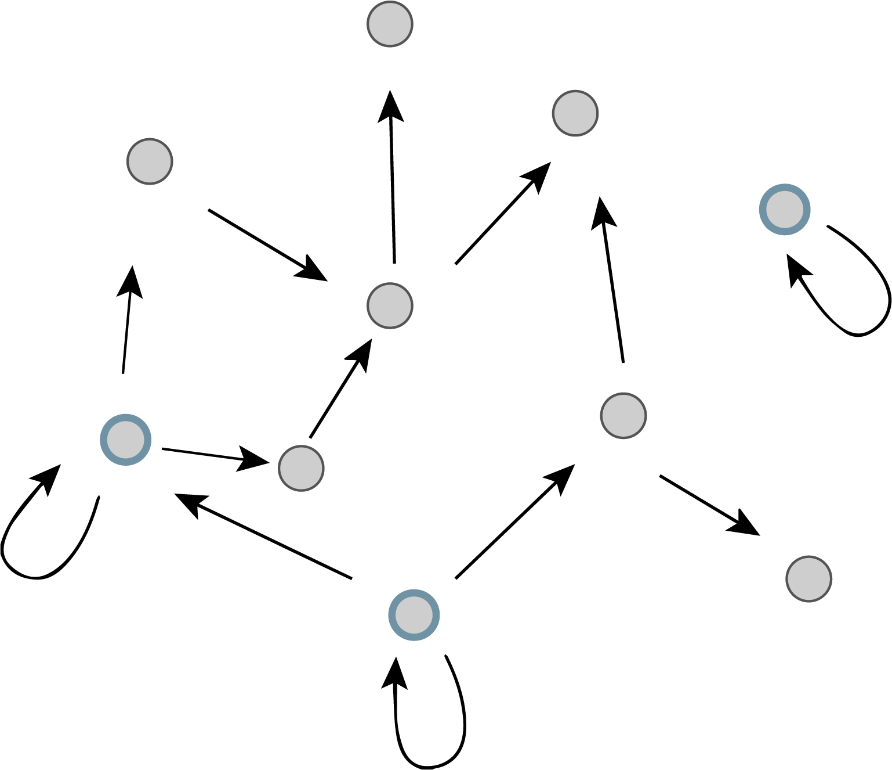

2.1 Protein stability determines the response time to a change in gene expression
So far, we have focused on what happens to a system at steady state. However, biological circuits change dynamically, even in constant environmental conditions.
Imagine a cell suddenly finds itself in a new environment, requiring it to turn up or down the expression of specific genes. How rapidly can it switch proteins to their new desired levels?
Starting with our basic equation for gene expression, and neglecting the mRNA level for the moment, we write:
\[
\begin{align}
\frac{\mathrm{d}x}{\mathrm{d}t} = \beta - \gamma x
\end{align}
\tag{2.1}\]
Let’s assume the gene has been off for a long time, so that \(x(0)=0\) and suddenly turns on at \(t=0\). Solving the above differential equation yields the general solution,
Thus, the parameter that determines the response time is \(\gamma\), the degradation + dilution rate of the protein. In the above expression, we see that the characteristic response time scale is \(\gamma^{-1}\). A plot of the concentration of gene product over time is shown below for \(\beta = 100\) and \(\gamma = 1\). Note that \(\beta\) has dimension of concentration per time and \(\gamma\) has dimension of inverse time. We take their respective units as arbitrary in the plots that follow.
Code
# Parametersbeta =100gamma =1# Dynamicst = np.linspace(0, 6, 400)x = beta / gamma * (1- np.exp(-gamma * t))# Plot responsep = bokeh.plotting.figure( frame_height=275, frame_width=375, x_axis_label="time", y_axis_label="x(t)", x_range=[0, 6],)p.line(t, x, line_width=2)# Mark the response time (when we get to level 1-1/e)t0 =1/ gammax0 = beta / gamma * (1- np.exp(-1))# Add the glyph with labelsource = bokeh.models.ColumnDataSource( data=dict(t0=[t0], x0=[x0], text=["response time = 1/γ"]))p.scatter(x="t0", y="x0", source=source, size=10)p.add_layout( bokeh.models.LabelSet( x="t0", y="x0", text="text", source=source, x_offset=10, y_offset=-10 ))p.add_layout( bokeh.models.Span( location=t0, level="underlay", dimension="height", line_color="black", line_dash="dashed", ))bokeh_show(p)
Dynamics of protein levels after an unregulated promoter is turned on.
2.2 How can we speed up responses?
So far, it seems as if the cell’s ability to modulate the concentration of a stable protein is quite limited, apparently requiring timescales on the order of the cell cycle for both increases and decreases. This seems rather pathetic for such successful, billion year old creatures. You might think you could beat this timescale and up-regulate the protein level faster by cranking up the promoter strength (increasing \(\beta\)). Indeed, this would allow the cell to hit a specific threshold earlier. However, it would also increase the final steady state concentration (\(\beta/\gamma\)), and therefore leave the timescale over which the system reaches its new steady-state unaffected.
One simple way to speed up the response time of the protein is to destabilize it, by increasing \(\gamma\), while also increasing \(\beta\) by the same factor, and thereby preserving the steady state protein concentration. This strategy pays the cost of a futile cycle of protein synthesis and degradation to provide a benefit in terms of the speed with which the regulatory system can reach a new steady state.
To see this, it is useful to normalize these plots by their steady states, as in the bottom plot below, which disentangles amplitude and timescale. Comparing normalized response curves in this way is reasonable, because mutations can alter the expression level of a gene allowing evolution to optimize expression level independently of the regulatory system.
Dynamics of protein levels after an unregulated promoter is turned on for various values of the degradation/dilution rate \(\gamma\).
This analysis reveals an important design principle: Increased protein degradation can speed up the response time of a gene expression system, at the cost of additional protein production, to reach the same steady state concentration.
2.3 Network motifs identify functionally important circuits
We have just seen that destabilizing a protein can speed its response time. However, most bacterial proteins, transcription factors in particular, are stable. Do they use other mechanisms to accelerate response times?
The answer to this question will turn out to be yes, there is a circuit that can accelerate responses. But before we get there, let’s step back for a moment to ask how one can go about discovering such functionally important circuits in the first place. Do you have to guess them? It would be nice if there were some kind of catalog of important circuits and their functions that we could browse.
The concept of network motifs is one way to obtain such a catalog. We define a network motif as a regulatory pattern, or sub-circuit, that is statistically over-represented in natural networks (circuits), compared to what one might expect from random networks with similar numbers of genes and regulatory interactions. In 2002, Alon and colleagues showed that network motif analysis could reveal recurring circuit modules with specific functions (Shen-Orr et al. 2002).
More specifically, imagine the transcriptional regulatory network of an organism as a graph consisting of nodes and directed edges (arrows). In bacteria, each node represents an operon, while each arrow represents regulation of the target operon (tip of the arrow) by a transcription factor in the originating operon (base of the arrow), as shown schematically here.

simple graph
The transcriptional regulatory network of E. coli has been mapped (see RegulonDB). It contains ≈424 operons (nodes), ≈519 transcriptional regulatory interactions (arrows), involving ≈116 transcription factors. If the target of each arrow was chosen randomly, the probability of any given arrow being autoregulatory is low (≈1/424). One might expect only about one such event in the entire network. However, ≈40 such autoregulatory arrows are observed. (If we further consider whether the arrows are activating (+) or repressing (-), then we find 32 negative autoregulatory operons and 8 positive autoregulatory ones. Later on, we will discuss both types.) Autoregulation thus appears to be statistically over-represented compared to the null hypothesis of random regulatory interactions. It is a motif.
The motif principle states that statistically over-represented patterns in networks have been selected repeatedly because they provide key cellular functions. A similar concept is useful in other aspects of biology. For example, sequence motifs are statistically over-represented sequences within the genome that are enriched for functionally important features, such as protein binding sites. Motifs of various kinds represent a cross-cutting concept in bioinformatics.
2.4 Negative autoregulation accelerates response times
Identifying motifs in regulatory networks is one way to discover functionally important circuits, and one of the strongest motifs of them all is autoregulation. Here, we will analyze autorepression (we will explore autoactivation in the next chapter). You can guess that since we are discussing speeding up circuit response that autorepression does just that. So, how does it work?
We start by writing down a differential equation describing the dynamics of the concentration \(x\) of the repressor. We represent the regulation of production using a repressive Hill function.
For arbitrary \(n\), this differential equation has no analytical solution. As is often the case when reasoning about circuits, it is worthwhile to consider extreme cases. We can obtain approximate expressions for the dynamics in the regime of, \(\beta/\gamma k \gg 1\). This is a mathematical statement of strong repression; the concentration of repressor necessary to invoke repression, \(k\), is less than the steady state level for unregulated expression, \(\beta/\gamma\). Here, we summarize the results derived in a technical appendix.
2.4.1 Highly ultrasensitive, strong repression
For the case where repression is highly ultrasensitive (\(\beta/\gamma k \gg 1\) and \(n \gg 1\)), we have
\[
\begin{align}
x(t) \approx \left\{\begin{array}{lll}
\beta t & & t < k/\beta,\\[1em]
k & & t \ge k/\beta
\end{array}
\right.
\end{align}
\tag{2.4}\]
A plot of the this approximate \(x(t)\) is shown below.
Initially, \(x\) builds up approximately linearly, at rate \(\beta\), since the repression is step-like and no repression is occurring for small \(x\). Eventually, its concentration is high enough to shut its own production off when \(x \approx k\), after which the steady state is maintained at \(x \approx k\).
The half-time to the steady state of \(k\) is \(t_{1/2} \approx k/2\beta\).
since \(\beta/\gamma k \gg 1\) for strong repression. Thus, the time to reach steady state is much shorter for the autorepressed circuit in the highly ultrasensitive, strong repression regime.
2.4.2 Less ultrasensitive strong autorepression
If we relax the condition that \(n \gg 1\), we can derive an approximate expression for the dynamics for approach to steady state, assuming that \(x_\mathrm{ss} \gg k\), which is typically only valid for \(n\) not too large. The result, again derived in a technical appendix, is
meaning that the autorepressed circuit still has a faster response. If we consider the non-ultrasensitive case with \(n = 1\), the ratio of half times is
with the autorepressed circuit being five times faster.
These approximate solutions for the dynamics are quite useful for reasoning about the speed boosts given by autorepression, but we need to resort to numerical solutions of the ODE to get the complete dynamics. We do this in the following sections, pausing first to consider how we might explicitly model inducers in the dynamics.
2.4.3 Incorporating explicit input dependence into a model of regulation
Throughout this chapter we have been invoking a situation where the gene has been off for some time before it is suddenly turned on. We previously saw that it is possible for an inducer molecule to inhibit the action of a repressor, but it is also possible for there to be molecules that can activate the action of a repressor, or inhibit the action of an activator, or many other types of interactions. For now, we will ignore specific biomolecular details and simply write out a generic dependence of the autorepressive gene’s expression on the presence of some external signal, \(s\).
What is the functional form of \(\beta(s)\)? We expect \(\beta\) should increase with \(s\) and have a value close to \(0\) when \(s\) is close to \(0\). Furthermore, there should be a limit to how rapidly the gene product can be produced, so \(\beta(s)\) must be finite, even for large \(s\). As we saw in the previous chapter, the Hill function satisfies all of these properties, and therefore provides a simple phenomenological model of activation by \(s\). Additionally, the two parameters of the Hill function, \(k\) and \(n\), allow flexibility in the \(s\) concentration required for activation as well as the degree of ultrasensitivity. We will therefore represent \(\beta(s)\) as an activating Hill function of \(s\):
\[\begin{align}
\beta (s) = \beta_0\, \frac{(s/k_s)^{n_s}}{1 + (s/k_s)^{n_s}}.
\end{align}\]
Choosing \(n_s = 1\) leads to a linear relationship between \(\beta\) and \(s\) in the regime where \(s \ll k_s\). Alternatively, the same versatile function can produce a step-like response in \(\beta\) at \(s = k_s\) if we choose \(n_s \gg 1\). It is important to keep in mind that the \(\beta(s)\) Hill function does not represent a process of transcriptional regulation like the Hill term in our original \(\mathrm{d}x/\mathrm{d}t\) expression, but rather phenomenologically represents a complex process of enzymatic inactivation of the repressor \(x\) by the external signal \(s\).
Having chosen to represent \(\beta(s)\) as an activating Hill function, our ODE model for our autoregulated gene now contains a product of activating and repressing Hill functions:
As our dynamical equations become more complex, as they are starting to here, numerical solutions become essential. Indeed, numerical solution of ordinary differential equations is a ubiquitous technique in the study and design of biological circuits. We introduce this technique in ?sec-approximate-solutions-of-autorepressive-dynamics.
In our following analysis, we will consider the non-ultrasensitive case of \(n = 1\).
2.4.5 Solving for a constant input
We will first consider the case where we initially have no \(s\) present, but a step increase in \(s\) at time \(t=0\) causes a corresponding step-like increase in the value of \(\beta\), which we represent by having \(n_s \gg 1\) and \(s \gg k_s\). After solving for \(x(t)\) numerically, we will plot it along with the unregulated case,
We can use these numerical solutions to compare the ratios of the half times of the autorepressed and unregulated case.
Code
# Find half time by finding time where reaches half maximum valuehalf_time_ratio = t[x <= x[-1] /2][-1] / t[x_unreg <= x_unreg[-1] /2][-1]print("half time ratio = %.2f"% half_time_ratio)
half time ratio = 0.23
This is close to the ratio of 0.2 that we derived from the approximate analytical solution above.
2.4.6 Design principle: Negative autoregulation of a transcription factor accelerates its response to a change in input
Comparing the unnormalized and normalized plots exposes two related effects of autoregulation. First, adding negative autoregulation reduces the steady-state expression level. Second, as a consequence, the approach to steady state is accelerated. This can be seen in the second plot where all the concentrations are normalized to their steady state. All told, in this example, negative autoregulation accelerated the dynamics by about 5-fold compared to the unregulated system. We have thus arrived at another design principle: Negative autoregulation of a transcription factor accelerates its response to a change in input.
2.4.7 Experimental demonstration of negative autoregulation speeding response time
Can this acceleration be observed experimentally? To find out, Rosenfeld and coworkers engineered a simple synthetic system based on a bacterial repressor called TetR, fused to a fluorescent protein for readout, and studied its turn-on dynamics in bacterial populations. The plot below show the response to sudden induction of gene expression of GFP-fused TetR, using data digitized from Fig. 3 of (Rosenfeld et al. 2002).
Code
# Load in data from Rosenfeld paper, Fig 3df = pd.read_csv(os.path.join(data_path, "rosenfeld_autorepression_data.csv"))# Build plotp = bokeh.plotting.figure( frame_width=350, frame_height=200, x_axis_label="cell cycles", y_axis_label="norm. free repressor conc.", x_range=[0, 1], y_range=[0, 1.1],)# Populated glyphsfor curve_label, g in df.groupby("curve"): p.line(g["x"], g["y"], color=g["color"].iloc[0], line_width=2)bokeh_show(p)
The curves in blue are three trials with the autorepressive circuit. The gray line shows the response in the presence of aTc, a small molecule that inactivates TetR. The black line shows the response of an “open loop” circuit (simple repression) that lacks feedback.
Interestingly, these dynamics show the expected acceleration, as well as some oscillations around steady-state, which may be explained by time delays in the regulatory system (which we will discuss more in an upcoming chapter).
2.5 Solving for a time-varying input
This acceleration in response occurs when we turn the gene on. What happens when we turn the gene off, for example by suddenly stopping the gene’s expression at some later time point? We can address this question by including \(s\) as a time-varying signal.
Let’s imagine that the input signal \(s\), rather than turning on instantaneously at \(t=0\) and remaining constant for the rest of the simulation, instead occurs as a pulse of duration \(\tau\) that peaks at time \(t_0\). Then \(s\) would be present roughly within the time window \((t_0-\tau/2, t_0+\tau/2)\), but absent outside of this time window. We will model the peak as a Gaussian function of unit height,
Let’s take a look at what the pulse looks like for visualization purposes.
Code
def s_pulse(t, t_0, tau):""" Returns s value for a pulse centered at t_0 with duration tau. """# Return 0 is tau is zero, otherwise Gaussianreturn0if tau ==0else np.exp(-4* (t - t_0) **2/ tau **2)# Plot the pulsep = bokeh.plotting.figure( frame_width=350, frame_height=150, x_axis_label="time", y_axis_label="s", x_range=[0, 10],)# Populate glyphp.line(t, s_pulse(t, 4.0, 2.0), line_width=2)# Show plotbokeh_show(p)
The input time course has the desired pulsatile shape. We proceed to numerically solve for the dynamics, giving the plot below.
Code
def neg_auto_rhs_s_fun(x, t, beta0, gamma, k, n, ks, ns, s_fun, s_args):""" Right hand side for negative autoregulation function, with s variable. Returns dx/dt. s_fun is a function of the form s_fun(t, *s_args), so s_args is a tuple containing the arguments to pass to s_fun. """# Compute s s = s_fun(t, *s_args)# Correct for x possibly being numerically negative as odeint() adjusts step size x = np.maximum(0, x)# Plug in this value of s to the RHS of the negative autoregulation modelreturn neg_auto_rhs(x, t, beta0, gamma, k, n, ks, ns, s)# Set up parameters for the pulses_args = (4.0, 2.0)# Package parameters into a tupleargs = (beta0, gamma, k, n, ks, ns, s_pulse, s_args)# Integrate ODEsx = scipy.integrate.odeint(neg_auto_rhs_s_fun, x0, t, args=args).transpose()[0]# Plot the normalized valuesx /= x.max()# Also calculate the pulse for plotting purposess = s_pulse(t, *s_args)# Plot the resultsp = bokeh.plotting.figure( frame_width=400, frame_height=150, x_axis_label="time", y_axis_label="normalized concentration", x_range=[0, 10],)# Populate glyphsp.line(t, s, line_width=2, color=colors[0], legend_label="s")p.line(t, x, line_width=2, color=colors[1], legend_label="x")# Place the legendp.legend.location ="top_right"# Allow hiding curvesp.legend.click_policy ="hide"# Show plotbokeh_show(p)
As expected, we see the qualitative result that \(x\) does not turn on until the pulse of \(s\) begins, and once \(s\) stops, \(x\) begins an exponential decay back down to zero. The specific quantitative details of the relationship between the \(x\) trajectory and the \(s\) pulse, such as the threshold value of \(s\) where \(x\) begins to turn on, are dependent on the specific parametrization of the system, such as the value of \(k_s\).
We now want to ask how the dynamics of \(x\)’s rise and fall compare to the unregulated case. In order to do this, we simply need to write another function that plots out the unregulated time course as an explicit function of \(s\).
The attentive reader might, at this point, raise an objection: How can we claim that the unregulated gene \(x\) is nonetheless still governed by the presence or absence of this input signal \(s\)? Indeed, although an unregulated gene does not have any transcriptional activators or repressors that modulate its expression, all genes in an organism can always have their expression level be affected by higher-level factors such as the concentration of RNA polymerase or ribosomes, the global metabolic rate, or in the case of eukaryotic organisms, chromatin accessibility. So in this case we could imagine that our \(s\) pulse represents a very simplified model of a scenario where a bacterium containing our gene is persisting in a nutrient-starved environment, where most of its genes have globally been turned off, and suddenly comes across a pulse of nutrients that allow it to transiently ramp up its metabolism and gene expression before returning to a starvation state when the nutrients disappear.
Let’s now put together a function that takes our unregulated ODE and converts it to a form that includes an explicit Hill-like \(s\)-dependence for the activation term, as in
We can again numerically solve and add the unregulated case to our plot.
Code
def unreg_rhs(x, t, beta0, gamma, ks, ns, s):""" Right hand side for constitutive gene expression modulated to only be active in the presence of s. Returns dx/dt. """return beta0 * (s / ks) ** ns / (1+ (s / ks) ** ns) - gamma * xdef unreg_rhs_s_fun(x, t, beta0, gamma, ks, ns, s_fun, s_args):""" Right hand side for unregulated function, with s variable. Returns dx/dt. s_fun is a function of the form s_fun(t, *s_args), so s_args is a tuple containing the arguments to pass to s_fun. """# Compute s s = s_fun(t, *s_args)# Plug in this value of s to the RHS of the negative autoregulation modelreturn unreg_rhs(x, t, beta0, gamma, ks, ns, s)# Package parameters into a tupleargs_unreg = (beta0, gamma, ks, ns, s_pulse, s_args)# Integrate ODEsx_unreg = scipy.integrate.odeint(unreg_rhs_s_fun, x0, t, args=args_unreg).transpose()[0]# Normalizex_unreg /= x_unreg.max()# Add to the plotp.line(t, x_unreg, line_width=2, color=colors[2], legend_label="unregulated x")# Show plotbokeh_show(p)
We can see from the above plot that although negative autoregulation speeds up the rise time of the gene’s expression in response to the appearance of stimulus, it has no impact on the speed of the fall time in response to the disappearance of the stimulus. We actually could have known this result would occur just from looking at the equations governing the gene’s dynamics: recall that in the regulated case, \(x\) is governed by
meaning that the dynamics of the fall in gene expression will become identical between the two systems as \(\beta(s)\) approaches \(0\).
2.6 Interactive plotting and varying parameters
Although we have now convincingly demonstrated that it is possible for negative autoregulation to speed the response time of a gene’s expression, we do not yet have a clear understanding of how the values of the parameters themselves, particularly \(k\) and \(n\), affect the magnitude of this speed-up. To gain insight into these effects, we turn to interactive plotting.
Plotting with Bokeh in Jupyter notebooks allows for interactivity with plots that can help to rapidly gain insights about how parameter values might affect the dynamics. We have found that this is a useful tool to rapidly explore parameter dependence on circuit behavior. We detail how to build an interactive plot in a technical appendix. The result is shown below.
By moving around the sliders, we can see that increasing the strength of the repression (by decreasing \(k\)) accentuates the speed-up provided by negative autoregulation. Furthermore, we see that increasing the cooperativitity of the repressor (by increasing \(n\)) makes the initial rise in \(x\) “sharper”. What other properties can you find through interacting with this plot?
Rosenfeld, Nir, Michael B. Elowitz, and Uri Alon. 2002. “Negative Autoregulation Speeds the Response Times of Transcription Networks.”Journal of Molecular Biology 323 (5): 785–93. https://doi.org/10.1016/S0022-2836(02)00994-4.
Shen-Orr, Shai S., Ron Milo, Shmoolik Mangan, and Uri Alon. 2002. “Network Motifs in the Transcriptional Regulation Network of Escherichia Coli.”Nature Genetics 31 (1): 64–68. https://doi.org/10.1038/ng881.